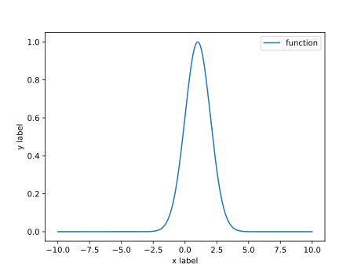
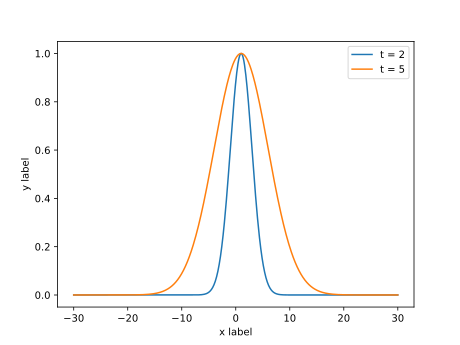

局部加权回归
简单介绍局部加权回归算法的思想
基本思想
文章{% post_link underfitting-and-overfitting %}简单介绍了欠拟合与过拟合的相关概念， 其中我们可以发现，如果选择的模型的阶比较低，就可能出现欠拟合的情况， 但如果过高，则又会出现过拟合的情况。
因此，局部加权回归的思想就是，只关注在预测点附近的样本点， 忽略或者减小离预测点较远的样本的影响。
如果把样本局限在预测点的附近，就可以将这些样本点近似看做是线性的 （这有点像微分的概念），这样就可以使用线性模型进行拟合，而无需考虑模型的阶。
数学原理
引入权值
在这个算法中， 我们设假设函数（hypotheses）： 。 其中为权值，且有1：
这里将记作，为自然常数。指需要进行预测的位置，可看作是轴上的一个坐标点。
是一个钟形曲线，比如
的函数图像为： 
容易看出来： 若越小，则有， 若越大，则有。
在示例的函数中则表现为：离越近，它的权值越大，越远则权值越小， 于是，离近的点得到重视，而离较远的点的影响被降低。
一般化
将权值函数写成更一般的方式：
其中被称为波长函数，它能够控制权值随距离下降的速度。
下图是一个例子： 
上图中的代表
需要注意的问题
首先，需要明确指出，局部加权回归不能完全避免欠拟合与过拟合的问题， 原因在于，算法实际上还是在使用线性回归，如果权值随距离下降的速度很慢， 即很大，算法实际上仍受到大部分数据的影响， 但总体上看来，它仍比普通的线性回归更能避免欠拟合与过拟合的问题。
其次，算法实际上并没有建立一个永久模型。 换句话说，每一次预测，算法都需要重新遍历训练集， 然后才进行加权计算，最后给出预测。 这与普通的线性回归不同，在线性回归中，我们得出了， 实际上就得出了一个能用来预测的模型，无须在每次预测时又重新进行训练。
脚注
-
在{% post_link linear-regression %}一文中提到， 也被称为权值，但注意，这两者是不同的。指的是输入特征的权值， 而指的是训练集中不同样本的权值， 而选择这个函数的理由是：根据经验，它具有普遍性（
概率论的奇妙之处）。 ↩